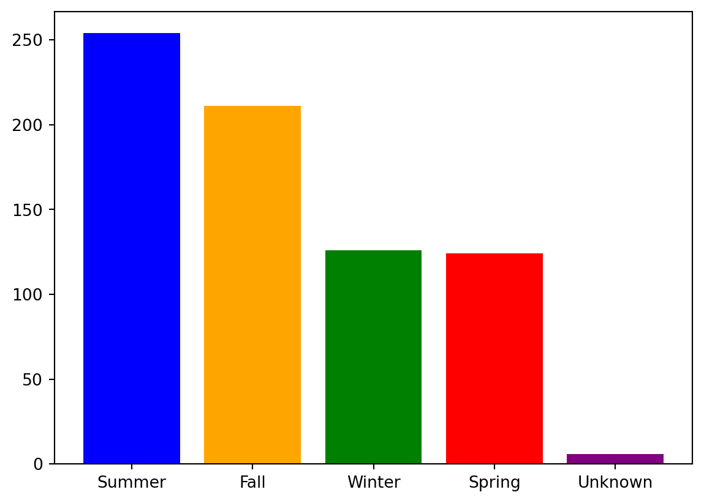

Code
# Importing packages
import pandas as pd
import matplotlib.pyplot as plt
import seaborn as sns
import warnings
warnings.filterwarnings('ignore')Regular Expressions (RegEx for short) are an immensely powerful tool for parsing strings. However, it’s many rules make RegEx very confusing, even for veteran users, so please don’t hesitate to ask questions! Here’s a snippet of the RegEx portion of the Fall 2023 Midterm
Reference Sheet:
Which string contains a match for the following regular expression, “\(\texttt{1+1\$}\)”?
Note that there are two operators here, the + and the $. The $ operator states that our match must occur at the end of the string, so that already rules out the third option. Furthermore, the + operator indicates that we need “one or more 1s” which is followed by another 1 (so two or more 1s in total). The only string ending with two or more consecutive 1s is the second option.
Write a regular expression that matches a string which contains only one word containing only lowercase letters and numbers (including the empty string).
\(\texttt{\^{}[a-z0-9]*\$}\)
Given \(\texttt{sometext = "I've got 10 eggs, 20 gooses, and 30 giants."}\), use \(\texttt{re.findall}\) to extract all items and quantities from the string. The result should look like \(\texttt{["10 eggs", "20 gooses", "30 giants"]}\). You may assume that a space separates quantity and type, and that each item ends in s.
\(\texttt{re.findall(r"\\d+\\s\\w+", sometext)}\)
The strings we want to match begin with a number, followed by a space, followed by a word. We can use this to construct our pattern.
For each pattern specify the starting and ending position of the first match in the string. The index starts at zero and we are using closed intervals (both endpoints are included).
| \(\texttt{abcdefg}\) | \(\texttt{abcs!}\) | \(\texttt{ab abc}\) | \(\texttt{abc, 123}\) | |
|---|---|---|---|---|
| \(\texttt{abc*}\) | [0,2] | |||
| \(\texttt{[ \^{} \\s]+}\) | ||||
| \(\texttt{ab.*c}\) | ||||
| \(\texttt{[a-z1,9]+}\) |
| \(\texttt{abcdefg}\) | \(\texttt{abcs!}\) | \(\texttt{ab abc}\) | \(\texttt{abc, 123}\) | |
|---|---|---|---|---|
| \(\texttt{abc*}\) | [0,2] | [0,2] | [0,1] | [0,2] |
| \(\texttt{[ \^{} \\s]+}\) | [0,6] | [0,4] | [0,1] | [0,3] |
| \(\texttt{ab.*c}\) | [0,2] | [0,2] | [0,5] | [0,2] |
| \(\texttt{[a-z1,9]+}\) | [0,6] | [0,3] | [0,1] | [0,3] |
Many of you have probably heard of Bigfoot before. It’s a mysterious ape-like creature that is said to live in North American forests. Most doubt its existence, but a passionate few swear that Bigfoot is real. In this discussion, you will be working with a dataset on Bigfoot sightings, visualizing variable distributions and combinations thereof to better understand how/when/where Bigfoot is reportedly spotted, and possibly either confirm or cast doubt on its existence. The Bigfoot data contains a ton of variables about each reported Bigfoot spotting, including location information, weather, and moon phase.
# Importing packages
import pandas as pd
import matplotlib.pyplot as plt
import seaborn as sns
import warnings
warnings.filterwarnings('ignore')# Loading bigfoot data
url = 'https://raw.githubusercontent.com/rfordatascience/tidytuesday/master/data/2022/2022-09-13/bigfoot.csv'
df = pd.read_csv(url)This dataset is extremely messy, with observations missing many values across multiple columns. This is normally the case with data based on citizen reports (many do not fill out all required fields). For the purposes of this discussion, we will drop all observations with any missing values and some unneeded columns. However, note this is not a good practice and you should almost never do this in real life!
# Drop unneeded rows and observations with missing values
bigfoot = df.dropna().rename({'temperature_high':'temp_high' ,'temperature_low':'temp_low'},axis = 1)
bigfoot = bigfoot.drop(['observed', 'location_details', 'county', 'state', 'title',
'latitude', 'longitude', 'number', 'classification', 'geohash',
'temperature_mid', 'dew_point','precip_probability', 'precip_type','summary',
'wind_bearing'], axis = 1)Here are the first few entries of the bigfoot table:
bigfoot.head(5)| season | date | temp_high | temp_low | humidity | cloud_cover | moon_phase | precip_intensity | pressure | uv_index | visibility | wind_speed | |
|---|---|---|---|---|---|---|---|---|---|---|---|---|
| 10 | Summer | 2016-06-07 | 74.69 | 53.80 | 0.79 | 0.61 | 0.10 | 0.0010 | 998.87 | 6.0 | 9.70 | 0.49 |
| 21 | Summer | 2015-10-02 | 49.06 | 44.24 | 0.87 | 0.93 | 0.67 | 0.0092 | 1022.92 | 3.0 | 9.16 | 2.87 |
| 32 | Fall | 2009-10-31 | 69.01 | 34.42 | 0.77 | 0.81 | 0.42 | 0.0158 | 1011.48 | 3.0 | 1.97 | 3.94 |
| 34 | Summer | 1978-07-15 | 68.56 | 63.05 | 0.88 | 0.80 | 0.33 | 0.0285 | 1014.70 | 5.0 | 5.71 | 5.47 |
| 55 | Summer | 2015-11-26 | 20.49 | 5.35 | 0.65 | 0.08 | 0.54 | 0.0002 | 1037.98 | 1.0 | 10.00 | 0.40 |
Let’s first look at distributions of individual quantitative variables. Let’s say we’re interested in wind_speed.
Which of the following are appropriate visualizations for plotting the distribution of a quantitative variable? (Select all that apply.)
A. Pie charts
B. Kernel Density Plot
C. Scatter plot
D. Box plot
E. Histogram
F. Hex plot
Kernel Density Plot, Box plot, Histogram
A Pie chart would not be appropriate because they are used to visualize the distribution of categories, or of a single qualitative variables. Scatter plots and Hex plots are also not appropriate as they visualize the relationship between two quantitative variables.
Write a line of code that produces a visualization that depicts the variable’s distribution (example shown below).
sns.histplot(data = bigfoot, x = "wind_speed", kde = True);Note that kde = True is required to overlay the KDE curve over the actual histogram!
Now, let’s look at some qualitative variables. Write a line of code that produces a visualization that shows the distribution of bigfoot sightings across the variable season (example shown below).
Hint: Use seaborn’s sns.countplot or matplotlib’s plt.bar.
sns.countplot(data = bigfoot, x = "season");In order to also replicate the colors of the bars, you would need to manually specify them.
sns.countplot(data = bigfoot, x = "season", palette = ["blue", "orange", "green", "red", "purple"]);You could have alternatively used Matplotlib!
season_counts = bigfoot["season"].value_counts()
plt.bar(season_counts.index, season_counts.values, color = ["blue", "orange", "green", "red", "purple"]);
Finally, produce a single visualization that showcases how the prevalence of bigfoot sightings at particular combinations of moon_phase and wind_speed vary across each season.
Hint: Think about color as the third information channel in the plot.

sns.scatterplot(data = bigfoot,
x = "moon_phase",
y = "wind_speed",
hue = "season",
alpha = 0.2);Note the two rather unfamiliar arguments:
bigfoot we want to color the points according toKernel Density Estimation is used to estimate a probability density function (or density curve) from a set of data. A kernel with a bandwidth parameter α is placed on data observations \(x_i\) with \(i ∈ \{1, ..., n\}\), and the density estimation is calculated by averaging all kernels. Below, Gaussian and Boxcar kernel equations are listed:
The KDE is calculated as follows: \(f_\alpha(x) = \frac{1}{n}\sum_{i = 1}^{n} K_\alpha(x, x_i)\).
Draw a KDE plot (by hand is fine) for data points [1, 4, 8, 9] using Gaussian Kernel and \(\alpha = 1\). On the plot show \(x\), \(x_i\), \(\alpha\), and the KDE.
With \(\alpha = 1\), we get a Gaussian Kernel of \(K_{1}(x, x_i) = \frac{1}{\sqrt{2 \pi}} \exp\left(-\frac{(x - x_i)^2}{2} \right)\).
This kernel is greatest when \(x = x_i\), giving us maximum point at \[K_{1}(x, x) = \frac{1}{\sqrt{2 \pi}} = 0.3989 \approx 0.4\]
Each individual kernel is a Gaussian centered, respectively, at . Since we have 4 kernels, each with an area of 1, we normalize by dividing each kernel by 4. This gives us a maximum height of \(0.1\). We then sum those kernels together to obtain the final KDE plot:
We wish to compare the results of KDE using a Gaussian kernel and a boxcar kernel. For \(\alpha > 0\), which of the following statements is true? Choose all that apply.
A. Decreasing \(\alpha\) for a Gaussian kernel decreases the smoothness of the KDE.
B. The Gaussian kernel is always better than the boxcar kernel for KDEs.
C. Because the Gaussian kernel is smooth, we can safely use large \(\alpha\) values for kernel density estimation without worrying about the actual distribution of data.
D. The area under the boxcar kernel is 1, regardless of the value of \(\alpha\).
E. None of the above.
Correct options: A, D
B is false because a boxcar kernel can perform better is \(\alpha\) is not chosen properly for the Gaussian kernel
C is false because an \(\alpha\) that is too high risks including too many points in the estimate, resulting in a flatter curve.